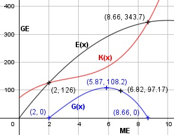

Aufgabe 98 Ein Monopolist arbeitet mit einer Kostenfunktion K(x) = x3 - 10x2 + 43x + 72 und einer linearen Nachfragefunktion pN(x). Sein Höchstpreis ist 70 GE und die Sättigungsmenge 20 ME. a) Bei welcher Menge liegt sein Betriebsoptimum? b) Berechnen Sie die Gewinnzone. c) Wie hoch ist der maximale Gewinn? d) Wie hoch ist sein Gewinn, wenn er mit seiner Grenzkostenfunktion als Angebotsfunktion arbeitet? a) K(x) x3 - 10x2 + 43x + 72 k(x) = ----- = ---------------------- x x 72 k(x) = x2 - 10x + 43 + ----- x 72 k'(x) = 2x - 10 - ---- x2 144 k''(x) = 2 + ------ immer > 0 für alle x > 0 x3 --> Tiefpunkt 72 2x - 10 - ---- = 0 |*x2 x2 2x3 - 10x2 - 72 = 0 Durch Probieren gefunden x1 = 6 Hornerschema: 2 -10 0 -72 x1 = 6 12 12 72 --------------------------- 2 2 12 0 Polynomdivision: 2x3 - 10x2 - 72 : (x -6) = 2x2 + 2x + 12 -(2x3 - 12x2) -------------- 2x2 - 72 -(2x2 - 12x) ------------- 12x - 72 -(12x - 72) ----------- 0 2x2 + 2x + 12 = 0 |:2 x2 + x + 6 = 0 p, q - Formel: p = 1, q = 6 x2,3 = x2,3 = 30 ± x2,3 = 30 ± --> keine weiteren Lösungen x2,3 = "-1" /"2" " ± " √((1/"2" )"2 - 6" ) x2,3 = - 0,5 "± " √("-5,75" ) Das Betriebsoptimum liegt bei 6 ME. b) Allgemeine Form der Nachfragefunktion. pN(x) = mx + b Bedingung für Höchstpreis x = 0: 70 = b Bedingung für Sättigungsmenge pN(x) = 0: 0 = m * 20 + 70 | -70 20m = - 70 | :20 m = -3,5 pN(x) = - 3,5x + 70 E(x) = pN(x) * x E(x) = (- 3,5x + 70) * x = -3,5x2 + 70x G(x) = - 3,5x2 + 70x - (x3 - 10x2 + 43x + 72) G(x) = - x3 + 6,5x2 + 27x - 72 G'(x) = - 3x2 + 13x + 27 G''(x) = - 6x + 13 - x3 + 6,5x2 + 27x - 72 = 0 Durch Probieren gefunden x1 = 2 Hornerschema: -1 6,5 27 -72 x1 = 2 -2 9 72 ----------------------------- -1 4,5 36 0 Polynomdivision: -x3 + 6,5x2 + 27x - 72 : (x - 2) = -(-x3 + 2x2) -------------- 4,5x2 + 27x - 72 -(4,5x2 - 9x) ---------- 36x - 72 -(36x - 72) ------------ 0 Ergebnis = -x2 + 4,5x + 36 -x2 + 4,5x + 36 = 0 |:(-1) x2 - 4,5x - 36 = 0 p, q - Formel: p = -4,5, q = -36 x2,3 = x2,3 = 30 ± x2,3 = 30 ± x2,3 = 2,25 ± 6,41 x2 = 8,66 ME = Gewinngrenze und x1 = 2 ME = Gewinnschwelle x3 = - 4,16 keine Lösung c) -3x2 + 13x + 27 = 0 |:(-1) 3x2 - 13x - 27 = 0 A, B, C - Formel: A = 3, B = -13, C = -27 x1,2 = x1,2 = x1,2 = 13 ± 22,2 x1,2 = ------------ 6 x11 = 5,87 ME G(5,87) = -5,873 + 6,5 * 5,872 + + 27 * 5,87 - 72 = 108,2 GE x2 = - 1,53 G''(5,87) = - 6 * 5,87 + 13 < 0 --> Hochpunkt Bei 5,87 ME ist der Gewinn maximal und beträgt 108,2 GE. d) Grenzkostenfunktion K'(x): K'(x) = 3x2 - 20x + 43 Marktgleichgewicht: 3x2 - 20x + 43 = - 3,5x + 70 |+3,5x 3x2 - 16,5x + 43 = 70 | -70 3x2 - 16,5x - 27 = 0 | :3 x2 - 5,5x - 9 = 0 p, q - Formel: p = -5,5, q = -9 x1,2 = x1,2 = 2,75 ± x1,2 = 2,75 ± x1,2 = 2,75 ± 4,07 x1 = 6,82 ME G(6,82) = -6,823 + 6,5 * 6,822 + + 27 * 6,82 - 72 = 97,17 GE x2 = -1,32 keine Lösung
